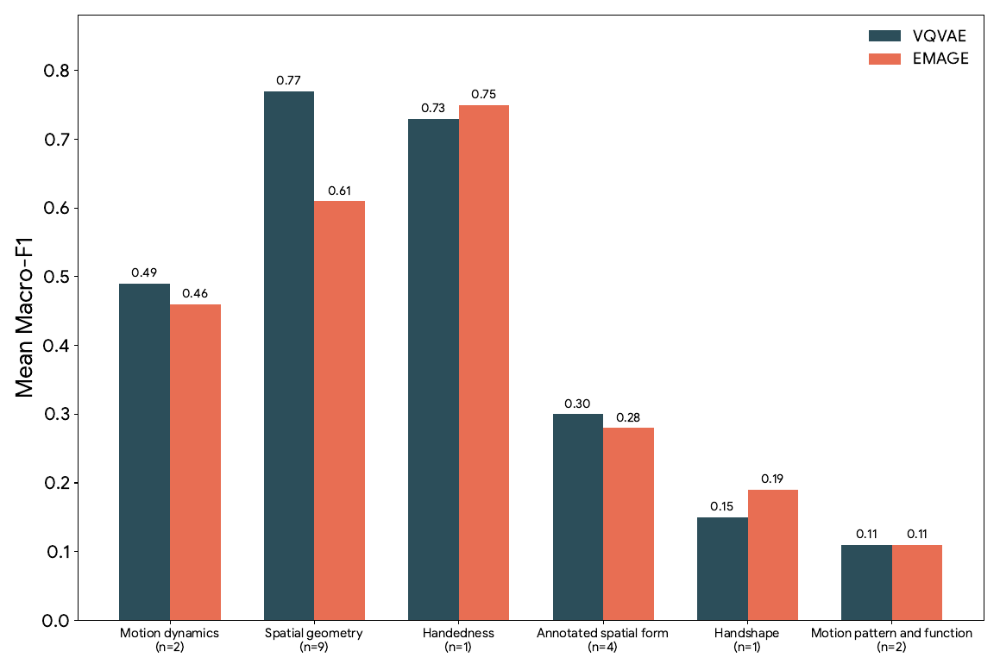
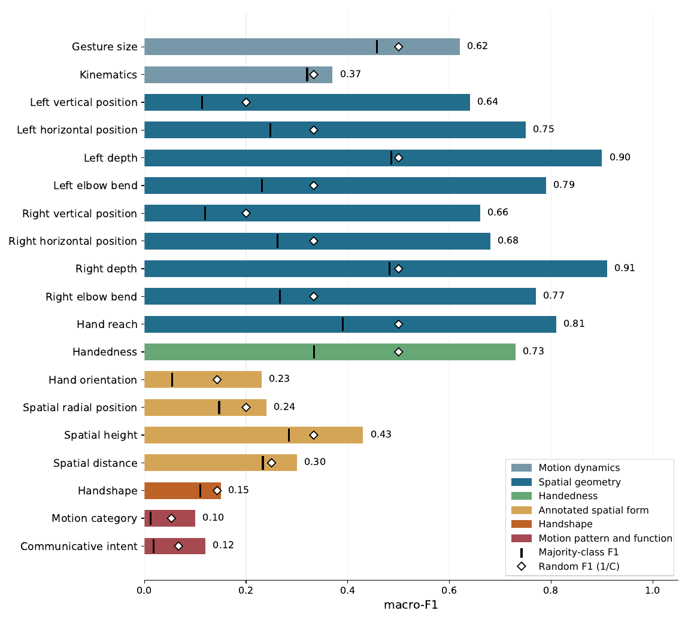

Do Motion Tokenizers for
Co-Speech Gesture Generation
Encode Gesture Semantics?
Abstract
Discrete motion tokenizers encode motion as atomic units and are widely used for co-speech gesture generation. It remains unclear which motion properties, especially those relevant to gesture semantics, are recoverable from these codebooks. We probe a reconstruction-trained codebook using 19 co-speech gesture descriptors spanning from raw motion to abstract communicative function. Results show that geometry and handedness are readily decodable from token embeddings, while motion category is only weakly decoded despite showing systematic differences in discrete code usage. This gap between reconstruction quality and descriptor decodability suggests that reconstruction objectives alone do not guarantee that gesture semantics are captured, and that evaluating codebooks on such properties can guide the design of more semantic motion tokenizers.
Original abstract. Paper, p. 1 ↗
Probing embeddings and discrete code usage
Can a descriptor be decoded from pooled token embeddings? Do its classes use different discrete codes? The study examines both.
Probe pooled embeddings
Mean-pool token embeddings, then predict each descriptor with a linear probe and a shallow MLP.
5-fold cross-validation · Macro-F1Compare code usage
Compare class-average code-frequency profiles and measure how informative individual code activations are.
JS divergence · Mutual information · FDR-corrected testsModel and evaluation details
The primary model has latent dimension 256, codebook size 2,048, and temporal downsampling factor 4. It is trained on combined BEAT and TED motion using position reconstruction and VQ commitment losses.
The body stream contains 8 coarse joints and the hand stream 30 finger joints; a shared decoder reconstructs the full pose. The configuration sweep contains 27 models. Probing is complemented by a comparison with EMAGE and by correlations between macro-F1 and mean per-joint position error (MPJPE).
The linear probe is multinomial logistic regression with balanced class weights; the MLP has one 128-unit ReLU layer. Both use the same five folds and class balancing. Code-level separation is tested with label permutations and Benjamini–Hochberg correction across descriptors within each stream. MI sums the information between individual code presence and descriptor labels.
Paper §3; Appendix A.1.2. Training corpus and the 778-clip probing set serve different roles.
From motion geometry to communicative function
The 19-descriptor panel combines skeleton-derived measurements with human annotations. Expand a group to see the descriptors.
01Motion dynamics2 descriptors · Manual
Gesture size · Kinematics
02Spatial geometry9 descriptors · Automatic
Left / right vertical position, horizontal position, depth and elbow bend · Hand reach
03Handedness1 descriptor · Manual
Handedness: one hand or both hands
04Annotated spatial form4 descriptors · Manual
Hand orientation · Spatial radial position · Spatial height · Spatial distance
05Handshape1 descriptor · Manual
Handshape: palm, cup, pinch, fist, bunch, fingers, index finger
06Motion pattern and function2 descriptors · Manual
Motion category · Communicative intent
Descriptor names and annotation types follow Tables 2–3. Full class labels ↗
Geometry is more recoverable from pooled embeddings
Both architectures show a similar accessibility gradient: strong spatial geometry and handedness, with much weaker handshape, motion category and communicative intent.

View exact values as a table
| Descriptor group | VQ-VAE | EMAGE |
|---|---|---|
| Motion dynamics | 0.49 | 0.46 |
| Spatial geometry | 0.77 | 0.61 |
| Handedness | 0.73 | 0.75 |
| Annotated spatial form | 0.30 | 0.28 |
| Handshape | 0.15 | 0.19 |
| Motion pattern and function | 0.11 | 0.11 |
Figure 2 labels VQ-VAE handshape as 0.15; Table 1 reports 0.16. Each is retained as printed in its source.

Exact descriptor-level values and baselines are reported in Table 4, p. 9 ↗.
Group-level analysis: probes, code usage and reconstruction
| Descriptor group | N | Linear F1 ↑ | MLP F1 ↑ | MI ↑ | Sig. | r(F1, MPJPE) |
|---|---|---|---|---|---|---|
| Motion dynamics | 2 | 0.49 ± 0.07 | 0.52 ± 0.08 | 0.35 | 1/2 | −0.26 |
| Spatial geometry | 9 | 0.77 ± 0.01 | 0.74 ± 0.03 | 1.07 | 9/9 | −0.69 |
| Handedness | 1 | 0.73 ± 0.03 | 0.66 ± 0.05 | 0.77 | 1/1 | −0.89 |
| Annotated spatial form | 4 | 0.30 ± 0.01 | 0.31 ± 0.02 | 1.06 | 3/4 | −0.48 |
| Handshape | 1 | 0.16 ± 0.03 | 0.20 ± 0.07 | 1.50 | 0/1 | −0.67 |
| Motion pattern and function | 2 | 0.11 ± 0.02 | 0.12 ± 0.01 | 3.62* | 1/2 | −0.45 |
F1 values reproduce the mean ± SD across descriptors reported in Table 1. N is the number of descriptors. Sig. counts descriptors with significant JS segregation. More negative r means lower reconstruction error is associated with higher probe F1. * Group-level MI is driven primarily by motion category. Original Table 1 ↗
Fine hand details are less faithfully reconstructed
Qualitative case study
Upper-body geometry and handshape
The paper’s example shows upper-body geometry being preserved while fine hand poses are averaged out. The authors relate this pattern to the scale difference between hand joints and upper-body joints in the reconstruction objective.
Qualitative evidence from §5; this example is not a separate quantitative evaluation.
Evaluate beyond reconstruction
Good reconstruction alone is not a sufficient measure of semantic accessibility.
Use both descriptor probes and code-level analyses to examine what a motion tokenizer preserves.What the study suggests
Future tokenizers should explicitly preserve communicatively relevant properties. The agreement between two architectures suggests that the observed gradient is not specific to one tokenizer design.
What the study does not establish
Low probe performance does not prove that a property is entirely absent. The study uses 778 TED clips, two skeleton-based tokenizers, and selected pooled representations and probe families; sequence-aware models may access information differently.
Conclusion and limitations, pp. 4–5. The contribution of BEAT versus TED to training was not ablated; some manual labels are sparse and may involve annotation subjectivity.
BibTeX
@inproceedings{suresh-etal-2026-motion,
title = "Do Motion Tokenizers for Co-Speech Gesture Generation Encode Gesture Semantics?",
author = "Suresh, Varsha and
Jain, Divij and
Liu, Jia and
Mughal, M. Hamza and
Demberg, Vera",
editor = "Ghaleb, Esam and
Takmaz, Ece and
Frassinelli, Diego and
Khaertdinov, Bulat and
Fern{\'a}ndez, Raquel and
Yumak, Zerrin and
Ozyurek, Asli",
booktitle = "Proceedings of the 1st Workshop on Multimodal Interaction in Face-to-Face Dialogue",
month = oct,
year = "2026",
address = "Budapest, Hungary",
publisher = "Association for Computational Linguistics",
url = "https://aclanthology.org/2026.mint-1.11/",
pages = "96--104",
ISBN = "979-8-89176-482-8"
}Download BibTeX · Conference citation from ACL Anthology ↗. Page content and figure references follow the arXiv v1 version.
Acknowledgments
This work is funded in part by the Deutsche Forschungsgemeinschaft (DFG, German Research Foundation) — GRK 2853/1 “Neuroexplicit Models of Language, Vision, and Action” — project number 471607914.